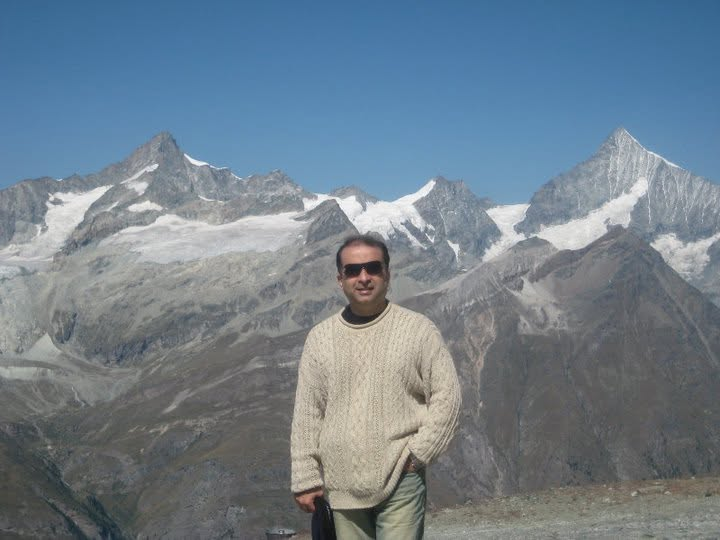

ABOUT UMAR
A life across worlds.
Umar Rafi’s life has been an accidental journey across countries, cultures and professions. Born in Pakistan, he has lived in Iraq, Canada, the United States, the UAE, Saudi Arabia, Lebanon and Malaysia. His work in aviation, technology, finance and entrepreneurship has shaped a curiosity that finds its fullest expression in literature: how people make sense of the world and their place within it.
His travels have brought lifelong friendships across nationalities, religions and backgrounds, often across borders defined by conflict and competing narratives. Those relationships inform a recurring question in his fiction: why do compassionate, well-meaning people so often find themselves on opposing sides?
Umar has authored books in literature, technology and finance, exploring how people and the systems they build respond to change and uncertainty. Literature remains closest to his heart, giving those questions room to unfold through stories, characters and the choices that shape their lives.
Poetry offers a more intimate expression of these interests. Alongside his own verse, he translates poetry from Urdu and his native Punjabi into English, sharing voices he cherishes across languages and cultures.
Umar holds a B.S. in applied mathematics from the United States Air Force Academy, an M.S. in computer science from Wichita State University, a Ph.D. in finance from INCEIF, and an M.S. in machine learning from Georgia Tech.



“The greatest gift one can offer another is a moment of laughter and a thought that lingers.”
— Umar Rafi
MEDIA & SPEAKING
Books, ideas and the systems shaping our world.
Available for selected interviews, podcasts, panels and speaking engagements.
Media & speaking